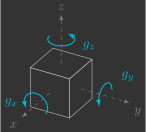

Estimador de atitude
Nesta secção você irá implementar o estimador de atitude, que estima os ângulos de Euler \(\phi\), \(\theta\) e \(\psi\) e velocidades angulares \(\omega_x\), \(\omega_y\) e \(\omega_z\) a partir das leituras do acelerômetro \(a_x\), \(a_y\) e \(a_z\) e do giroscópio \(g_x\), \(g_y\) e \(g_z\).

Para isto, serão implementadas duas novas funções:
sensors()attitudeEstimator()
Implementação
Para começar, copie e cole o arquivo mixer.c e renomeie ele para attitude_estimator.c.
Variáveis globais
Declare mais algumas variáveis globais, que são as variáveis que entram e saem da função do estimador de atitude.
// Actuators
float pwm1, pwm2, pwm3, pwm4; // Motors PWM
// Sensors
float ax, ay, az; // Accelerometer [m/s^2]
float gx, gy, gz; // Gyroscope [rad/s]
// System inputs
float ft; // Thrust force [N]
float tx, ty, tz; // Roll, pitch and yaw torques [N.m]
// System states
float phi, theta, psi; // Euler angles [rad]
float wx, wy, wz; // Angular velocities [rad/s]
Variáveis de registro
Logo abaixo no código, declare também algumas variáveis que serão utilizados para registrar os valores dos ângulos de Euler e enviar eles ao Crazyflie Client, para que seja possível visualizar nossa estimativa em tempo real(1).
- Nós não utilizamos as próprias variáveis declaradas anteriormente pois o Crazyflie Client trabalha com ângulos em graus e não em radianos.
// Auxiliary variables for logging Euler angles (CFClient uses degrees and not radians)
float log_phi, log_theta, log_psi;
// Logging group that stream variables to CFClient.
LOG_GROUP_START(stateEstimate)
LOG_ADD_CORE(LOG_FLOAT, roll, &log_phi)
LOG_ADD_CORE(LOG_FLOAT, pitch, &log_theta)
LOG_ADD_CORE(LOG_FLOAT, yaw, &log_psi)
LOG_GROUP_STOP(stateEstimate)
Sensores
A função sensors() pega as leituras do acelerômetro e giroscópio e armazena elas nas variáveis globais previamente declaradas.
// Get sensor readings from estimator module
void sensors()
{
// Declare variable that store the most recent measurement from estimator
static measurement_t measurement;
// Retrieve the current measurement from estimator module
while (estimatorDequeue(&measurement))
{
switch (measurement.type)
{
// Get accelerometer sensor readings and convert [G's -> m/s^2]
case MeasurementTypeAcceleration:
ax = -measurement.data.acceleration.acc.x * g;
ay = -measurement.data.acceleration.acc.y * g;
az = -measurement.data.acceleration.acc.z * g;
break;
// Get gyroscope sensor readings and convert [deg/s -> rad/s]
case MeasurementTypeGyroscope:
gx = measurement.data.gyroscope.gyro.x * pi / 180.0f;
gy = measurement.data.gyroscope.gyro.y * pi / 180.0f;
gz = measurement.data.gyroscope.gyro.z * pi / 180.0f;
break;
default:
break;
}
}
}
Você pode simplesmente copiar e colar o código acima. Se quiser entender ele melhor, volte na secção dos sensores.
Estimador de atitude
Já a função attitudeEstimator(), é quem estima os ângulos de Euler e velocidades angulares a partir das leituras do acelerômetro e do giroscópio.
// Estimate orientation from IMU sensor
void attitudeEstimator()
{
}
Ela está em branco pois será implementada em etapas a seguir. Inicialmente, você irá considerar apenas a dinâmica 2D e estimar um único ângulo de Euler e velocidade angular. Você começará implementando um estimador que utiliza só o acelerômetro e em seguida um que utiliza só o giroscópio. Após terem sido verificado os prós e contras de cada sensor, ambos serão utilizados em conjunto de uma maneira inteligente. Por fim, você irá considerar a dinâmica 3D e estimar todos os ângulos de Euler e velocidades angulares.
Loop principal
Inclua no seu loop principal a chamada das funções sensors() e attitudeEstimator().
// Main application task
void appMain(void *param)
{
// Infinite loop (runs at 200Hz)
while (true)
{
reference(); // Read reference setpoints (from Crazyflie Client)
sensors(); // Read raw sensor measurements
attitudeEstimator(); // Estimate orientation (roll/pitch/yaw) from IMU sensor
mixer(); // Convert desired force/torques into motor PWM
motors(); // Send commands to motors
vTaskDelay(pdMS_TO_TICKS(5)); // Loop delay (5 ms)
}
}
Acelerômetro
Acelerômetros inerciais são sensores que medem aceleração linear. Eles são compostos por um corpo de prova conectada a um invólucro através de uma mola e um amortecedor.
Quando o invólucro sofre uma aceleração \({\color{magenta}\ddot{x}}\), o corpo dentro do invólucro sofre um deslocamento \({\color{cyan}x'}\). Medindo o deslocamento do corpo \({\color{cyan}x'}\), é possível inferir a aceleração sofrida pelo invólucro \({\color{magenta}\ddot{x}}\).

Ao montarmos três acelerômetros perpendiculares entre si, ou seja, um alinhado com cada eixo, temos o que é chamado de acelerômetro de 3 eixos, que consegue medir a aceleração linear em todas as direções.
Trigonometria
O acelerômetro está fixo no sistema de coordenadas móvel drone. Como há sempre a aceleração da gravidade apontando para baixo no sistema de coordenadas inercial, com um pouco de trigonometria é possível obter o deslocamento angular(1).
- O subescrito \(_a\) quer dizer que esse valor foi obtido a partir das leituras do acelerômetro. Além disso, os sinais negativos não foram cortados pois você deverá utilizar a função
atan2fem seu código, para saber em qual quadrante está o seu ângulo.
[Figura]
Inclua na função attitudeEstimator() uma variável local \(\phi_a\), que corresponde ao ângulo medido a partir das leituras do acelerômetro \(a_y\) e \(a_z\) e, em seguida, atribua ela ao ângulo estimado \(\phi\).
// Estimate orientation from IMU sensor
void attitudeEstimator()
{
// Measured angle from accelerometer
float phi_a = atan2f(-ay, -az);
// Estimated angle is given purely from accelerometer measurement
phi = phi_a;
// Auxiliary variables for logging Euler angles (CFClient uses degrees and not radians)
log_phi = phi * 180.0f / pi;
}
Verifique como está sua estimativa, para isso carregue esse programa no drone e utilize o Crazyflie Client para visualizar o resultado.
Resultado esperado
Você deve notar que o estimador implementado é adequado somente para condições estáticas (baixas frequências). Isso se deve ao fato de que, ao movimentar o drone, surgem outras acelerações além da aceleração da gravidade. Essas acelerações acabam sendo um ruído para o nosso estimador, e uma forma de removê-las é através de um filtro passa-baixas.
Filtro passa-baixas
Um filtro passa-baixas é um filtro que atenua sinais superiores a uma determinada frequência de corte \(\omega_c\). Ele é muito utilizado para filtrar ruídos, dado que os mesmos geralmente possuem uma frequência superior ao sinal que está sendo medido.
Dessa forma, para obtermos um ângulo estimado \(\phi\) sem ruídos, vamos passar o ângulo medido pelo acelerômetro \(\phi_a\) por um filtro passa-baixas. No domínino da frequência, isso pode ser representado pelo seguinte diagrama de blocos.
[Figura]
Dado que vamos implementar este filtro em um microcontrolador, torna-se necessário determinar o correspondente discreto do mesmo. Primeiro, vamos obter a equação diferencial correspondente, utilizando a transformada inversa de Laplace.
Em seguida, vamos discretizar a equação diferencial, utilizando o método de Euler implícito(1).
- O método de Euler explícito ("pra frente") utiliza a aproximação \(\frac{d}{dt}x(t) \approx \frac{x(t+\Delta t)-x(t)}{\Delta t}\), equanto que o método de Euler implícito ("pra trás") utiliza a aproximação \(\frac{d}{dt}x(t) \approx \frac{x(t)-x(t-\Delta t)}{\Delta t}\)}
Note que um filtro passa-baixas discretizado nada mais é do que uma média ponderada entre o valor antigo e o valor medido, e a variável \(\alpha\) é exatamente esse fator de ponderação. O mesmo pode ser representado pelo seguinte diagrama de blocos:
[Figura]
A variável \(\alpha\) é chamada de fator de suavização, ela depende da frequência de corte \(\omega_c\) e do intervalo de tempo \(\Delta t\) entre medições:
- Quanto maior for a frequência de corte \(\omega_c\), mais próximo de 1 estará o fator de suavização \(\alpha\) e, consequentemente, mais peso será dado aos valores medidos. Isso é vantajoso pois garante que o sinal estimado convirja mais rápido, no entanto, também deixa passar mais ruído.
- Quanto menor for a frequência de corte \(\omega_c\), mais próximo de 0 estará o fator de suavização \(\alpha\) e, consequentemente, mais peso será dado aos valores antigos. Isso é vantajoso pois deixa passar menos ruído, no entanto, faz com que o sinal estimado convirja mais devagar.
Determinar a frequência de corte \(\omega_c\) ideal, que garante um bom compromisso entre redução de ruído e atraso, é o maior desafio na implementação de um filtro passa-baixas.
[Figura]
Modifique a sua função attitudeEstimator() de modo que agora o ângulo estimado \(\phi\) possua um filtro passa-baixas.
// Estimate orientation from IMU sensor
void attitudeEstimator()
{
// Estimator parameters
static const float wc = 1.0f; // Cutoff frequency of filter [rad/s]
static const float alpha = (wc*dt)/(1.0f+wc*dt); // Weighting factor of filter
// Measured angle from accelerometer
float phi_a = atan2f(-ay, -az);
// Low-pass filter accelerometer estimation
phi = (1.0f - alpha) * phi + alpha * phi_a;
// Auxiliary variables for logging Euler angles (CFClient uses degrees and not radians)
log_phi = phi * 180.0f / pi;
}
Experimente valores de 1rad/s, 10rad/s e 100rad/s para a frequência de corte \(\omega_c\) e verifique como isso influencia na sua estimativa. Para isso, carregue esse programa no drone e utilize o Crazyflie Client para visualizar o resultado.
Resultado esperado
Você deve notar que, mesmo no melhor dos casos, o estimador implementado não é adequado para condições dinâmicas (altas frequências).
Vamos agora esquecer o acelerômetro por um instante e utilizar apenas o giroscópio para estimação de atitude. Não delete o código que você escreveu até agora, apenas comente ele (o mesmo será útil adiante).
Giroscópio
Giroscópios inericiais são sensores que medem velocidade angular. Eles são compostos por um corpo de prova conectada a um invólucro através de duas mola e dois amortecedores.

No eixo \({\color{cyan}x'}\) é forçada uma vibração \({\color{#65DD18}f}=f_0\sin(\omega_0t)\). Quando o invólucro possui uma velocidade angular \({\color{magenta}\dot{\theta}}\), devido à aceleração de Coriolis, é induzida uma vibração no eixo \({\color{cyan}y'}\). Medindo a amplitude da vibração em \({\color{cyan}y'}\) é possível inferir a velocidade angular do invólucro \({\color{magenta}\dot{\theta}}\).

Ao montarmos três giroscópios perpendiculares entre si, ou seja, um alinhado com cada eixo, temos o que é chamado de giroscópio de 3 eixos, que consegue medir a velocidade angular em todas as direções.
Integração
O giroscópio está fixo no sistema de coordenadas móvel drone, portanto o deslocamento angular pode ser obtido integrando esse valor (1).
- O subescrito \(_g\) quer dizer que esse valor foi obtido a partir das leituras do giroscópio.
[Figura]
No domínio da frequência, isso pode ser representado pelo seguinte diagrama de blocos.
[Figura]
Novamente, para determinar o correspondente discreto, primeiro obtemos a equação diferencial correspondente:
Novamente, para determinar o correspondente discreto, primeiro obtemos a equação diferencial correspondente:
E em seguida discretizamos a equação diferencial:
Dessa forma, podemos representar um integrador pelo seguinte diagrama de blocos.
[Figura]
Inclua na função attitudeEstimator() uma variável local \(\phi_g\), que corresponde ao ângulo medido a partir da integração da leitura do giroscópio \(g_x\) e, em seguida, atribua ela ao ângulo estimado \(\phi\).
// Estimate orientation from IMU sensor
void attitudeEstimator()
{
// Measured angle from gyroscope
float phi_g = phi + gx * dt;
// Estimated angle is given purely from gyroscope measurement
phi = phi_g;
// Auxiliary variables for logging Euler angles (CFClient uses degrees and not radians)
log_phi = phi * 180.0f / pi;
}
Filtro passa-altas
// Estimate orientation from IMU sensor
void attitudeEstimator()
{
// Estimator parameters
static const float wc = 1.0f; // Cutoff frequency of filter [rad/s]
static const float alpha = (wc*dt)/(1.0f+wc*dt); // Weighting factor of filter
// Measured angle from gyroscope
float phi_g = phi + gx * dt;
// High-pass filter gyroscope estimation
phi = (1.0f - alpha) * phi_g;
// Auxiliary variables for logging Euler angles (CFClient uses degrees and not radians)
log_phi = phi * 180.0f / pi;
}
Acelerômetro + Giroscópio
Filtro complementar
// Estimate orientation from IMU sensor
void attitudeEstimator()
{
// Estimator parameters
static const float wc = 1.0f; // Cutoff frequency of filter [rad/s]
static const float alpha = (wc*dt)/(1.0f+wc*dt); // Weighting factor of filter
// Measured angle from accelerometer
float phi_a = atan2f(-ay, -az);
// Measured angle from gyroscope
float phi_g = phi + gx * dt;
// Complementary filter of gyroscope and accelerometer estimations
phi = (1.0f - alpha) * phi_g + alpha * phi_a;
// Auxiliary variables for logging Euler angles (CFClient uses degrees and not radians)
log_phi = phi * 180.0f / pi;
}